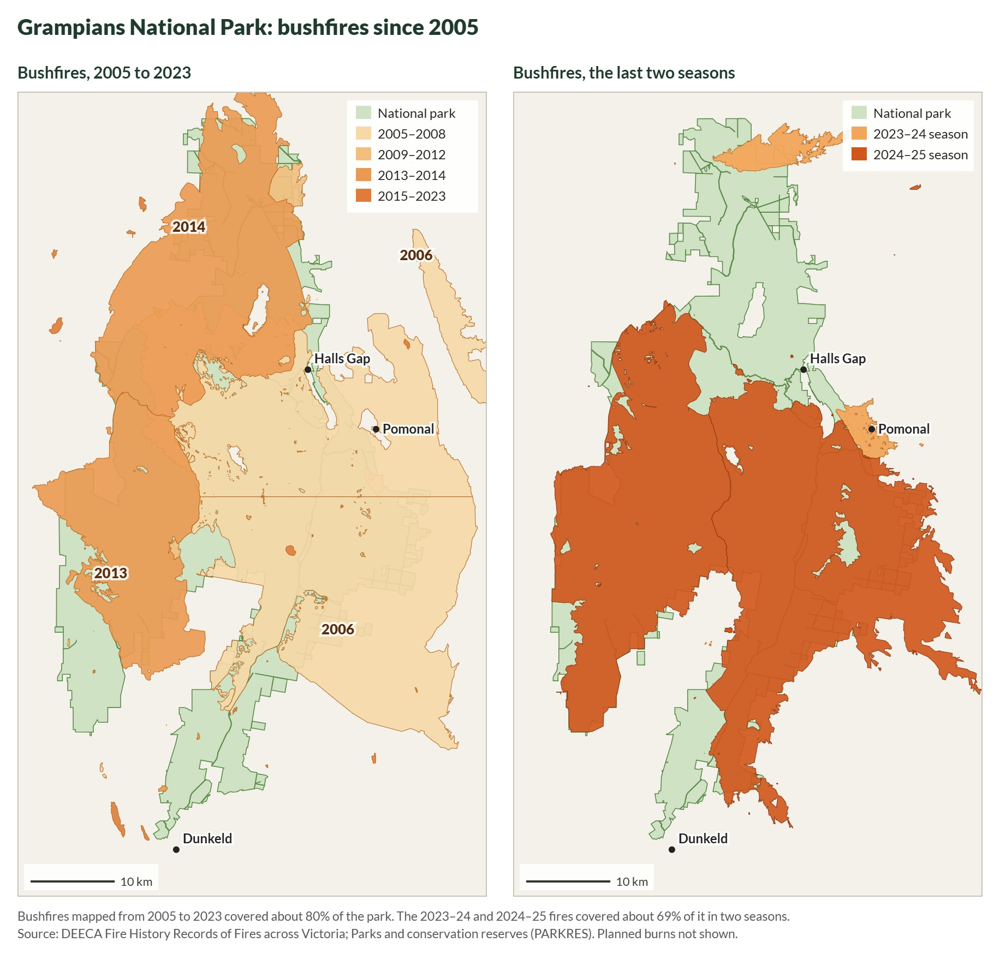

Your property’s fire history
At this stage we know our block’s vegetation types and how they are expected to respond to fire.
So now we need the block’s fire history. How the bush responds to the most recent fire depends on how often it has burnt before. We are interested in the interval between fires, not just any single fire.
The lookup tool uses the Victorian Government’s fire history maps, which go back to 1939. Before you look up your fire history, there are a few things to keep in mind.
Not all fires have been mapped. Coverage is best for large fires on public land. Small and older fires on freehold are recorded patchily. A blank is not evidence that nothing burnt.
The map shows perimeters, not severity. The fire history maps don’t show the difference between an extremely hot fire that removed entire canopy layers and a cooler, patchier fire. Ground shown inside a fire boundary may still contain patches that didn’t burn. The state has separate severity mapping for some recent fires, modelled from aerial and satellite imagery, and the lookup tool uses it where it exists.12

In the Wimmera Bushfire Ecology Lookup Tool, section 1.3, Your property’s fire history, lists every fire on the state record for your block since 1939: the fire’s name, whether it was a bushfire or a planned burn, how much of your block it burnt, and in a few cases, how severe it was.


The state record shows four fires on the example block: a bushfire in 1939, a small 1990 planned burn that caught 11 hectares in one corner, the 2006 Mt Lubra fire, and the 2025 Yarram Gap Road fire. The table gives each fire’s season and name, whether it was a bushfire or a planned burn, and how much of the block falls inside its mapped boundary. The 1939 and 2006 fires covered the whole block. The 2025 fire covered 98 hectares, 58% of it, and the rest escaped.
Clicking the 2025 fire turns the part of the block it burnt yellow, and Show the whole fire on the map zooms out to show the block was a small piece of a fire that ran through much of the Grampians.
The last column, How severe was it here?, is filled in from the state’s severity mapping where it exists. None of these fires has severity mapping on this block, so it reads Not sure. If you saw the fire, or the ground straight after it, set it yourself: High means crowns burnt with few unburnt patches, Patchy means the canopy was mostly intact.
Looking at the surrounding landscape
Your block’s fire history means more once you know what happened to the bush around it. At the bottom of section 1.3, the lookup tool tells you how much of the native bush within 5 km burnt in your block’s most recent fire. On the example block it reads: “the 2025 fire burnt 79% of the native bush within 5 km of your block and 70% of your block’s bush.” In this case, what happened on the block is similar to what happened across the larger landscape: most of the area burnt, with 20 to 30% of the land left as unburnt refuges. We will expand on what this might mean in section 2.1.
Where this comes from. DEECA’s fire history records, published on DataVic as Fire History Records of Fires across Victoria and Fire History showing the number of times areas have been burnt.1 Forest Fire Management Victoria also publishes maps of the major bushfires since 1939. If you’d rather not use the lookup tool, your Landcare facilitator, CMA or council can map your block’s fire history in a few minutes.
The lookup tool loads the state data from the guide’s GitHub Pages site (checked 2 October 2026). If the landholder can say how hot the 2025 fire ran on the example block, set it in the tool and update 1.4.